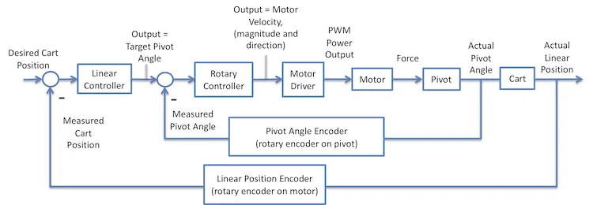

{kind=link}
A life-long learner with a passion for ocean exploration committed to building a sustainable future through education, research and innovation in engineering, science, manufacturing and product development.

My interests in electro-mechanical systems span a variety of applications, from industrial automation—like the flesxible manufacturing facilitiy shown in the time lapse at right to marine propulsion.
Below are a few examples of projects I've worked on that highlight my expertise in this area.

I designed an built the Automated Design & Manufacturing Lab at Boston University to support several courses at the university. This system integrated industrial scale machinery with a flexbile programming structure that allowed the students to create their own automated manufacturing processes and jobs, and provided opportunities for them to dig deeper into how the various components worked individually and as an integrated system. The video below shows some of the capabilities of the outcome.
Made from a repurposed linear slide, encoders track the position of cart and angle of the pivot, and send feedback to an Arduino Mega which enables control of the cart position and pendulum angle. Arduino code based on this project on Github.
In this case, there are two PID control loops: The outer loop aims to keep the cart position on the slide in the center; the controller output is the target pivot angle for the inner loop If the cart moves right, the target angle tilts left to cause the cart to move back to center The inner loop just aims to keep the pendulum vertical by moving the car to get the actual pivot angle to match the target angle.
More examples on the Industry 4.0 page.
A life-long learner with a passion for ocean exploration committed to building a sustainable future through education, research and innovation in engineering, science, manufacturing and product development.